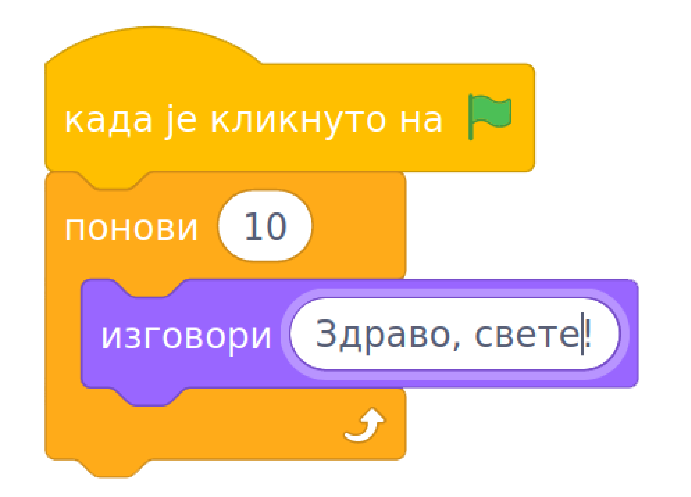
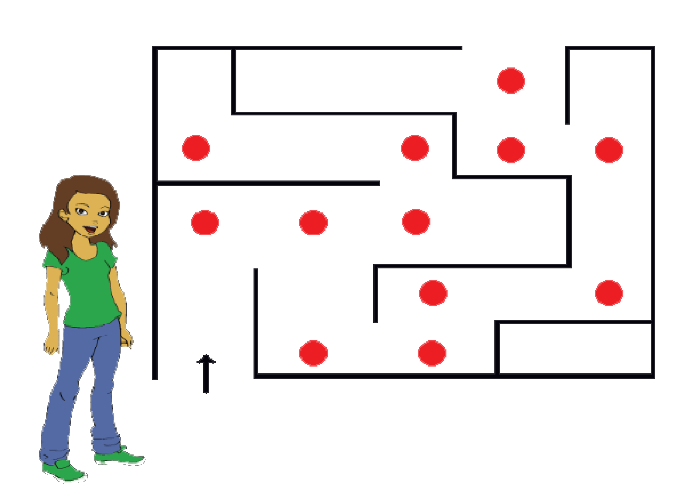
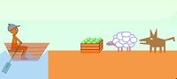

1.2. Квиз - Алгоритамски начин размишљања¶
Питање 1¶

- Да
- Нетачно!
- Не
- Тачно!
Q-3: Да ли рачунари могу да раде без програма?
Питање 2¶

Када програмер рачунару даје упутства (наредбе), програмер напише:
(Одговор написати малим словима, ћирилицом)
Питање 3¶
- Алгоритам
- Тачно!
- Програмски језик
- Нетачно!
- Скреч
- Нетачно!
- Блоковско програмирање
- Нетачно!
Q-4: Реченица: Коначан низ корака који воде до решења неког проблема. описује:
Питање 4¶
Чему је једнако b након извршавања следећих наредби ако се знак * користи за множење?
Нека a буде 2
Нека b буде 5 * a
Одговор написати бројем.
Питање 5¶
Изађи из куће.
Скрени лево.
Иди право 200 метара.
Пређи пешачки прелаз и скрени лево.
После беле зграде, скрени лево.
Уђи у књижару и тражи књигу коју је наставник поменуо.
- Рачунар
- Нетачно!
- Човек
- Тачно!
- Човек и рачунар
- Нетачно!
Q-5: Дато је упутство:
Ко може да изврши ово упутство?
Питање 6¶
- Исписаће се "Здраво, свете!"
- Нетачно!
- Исписаће се "Здраво, свете!" десет пута.
- Тачно!
- Исписаће се "Здраво, свете!" на сваких десет секунди.
- Нетачно!
Q-6: Шта је резултат извршавања следећег блока наредби?
{kind=link}
Питање 7¶
- Једно
- Тачно! Означимо куглице бројевима 1, 2 и 3. Измеримо куглице 1 и 2. Ако је једна од њих лакша, то је тражена куглица. Ако су теразије у равнотежи, куглица број 3 је тражена куглица.
- Два
- Нетачно!
- Три
- Нетачно!
Q-7: Алгоритам мерења. Имамо три наизглед једнаке куглице, али је једна од њих лакша од преостале две. Колико је најмање мерења потребно на теразијама без тегова да би се са сигурношћу утврдило која је то куглица?
Питање 8¶
- А -> В, В -> Б, А -> В
- Нетачно!
- А -> Б, Б -> В, В -> А
- Тачно!
- А -> Б, Б -> В, Б -> А
- Нетачно!
Q-8: Алгоритам преливања. Имамо три посуде, назовимо их А, Б и В. Њихове запремине у литрима су:
А = 5, Б = 3 и В = 2. На почетку је посуда А пуна, а Б и В су празне. Како помоћу 3 преливања можемо добити А = 4, Б = 1 и В = 0?
Питање 9¶
- Надесно, право, надесно, налево, налево, надесно, налево, налево.
- Нетачно!
- Надесно, надесно, налево, налево, надесно, налево, налево, надесно, право.
- Тачно!
- Надесно, надесно, налево, налево, надесно, налево, налево, надесно, налево.
- Нетачно!
Q-9: Алгоритам проласка кроз лавиринт. Девојчица улази у лавиринт на месту означеном стрелицом. Који од наредних низова инструкција за понашање на црвеним тачкама доводи девојчицу са слике до излаза из лавиринта на горњој страни? (На црвеним тачкама девојчица само заузима положај пре кретања ка следећој црвеној тачки.)
{kind=link}
Питање 10¶
- Превези овцу, врати се, превези вука, врати се са овцом, превези купус, врати се, превези овцу.
- Тачно!
- Превези купус, врати се, превези вука, врати се са купусом, превези овцу, врати се, превези купус.
- Пази, вук и овца остају сами на другој обали!
- Превези овцу, врати се, превези вука, врати се, превези купус.
- Пази, вук и овца остају сами на другој обали!
- Превези овцу, врати се, превези вука, врати се са овцом, превези купус.
- Пази, овца је остала на првој обали!
Q-10: Алгоритам преласка преко реке. Милица треба преко реке у чамцу да превезе вука, овцу и купус. У чамац поред Милице може да стане само још један путник (само вук, само овца или само купус). Вук и овца не смеју да остану сами на обали јер ће вук појести овцу. Такође, овца и купус не смеју да остану сами на обали јер ће овца појести купус.
Који од следећих алгоритама треба да примени Милица да би превезла вука, овцу и купус на другу обалу?
{kind=link}